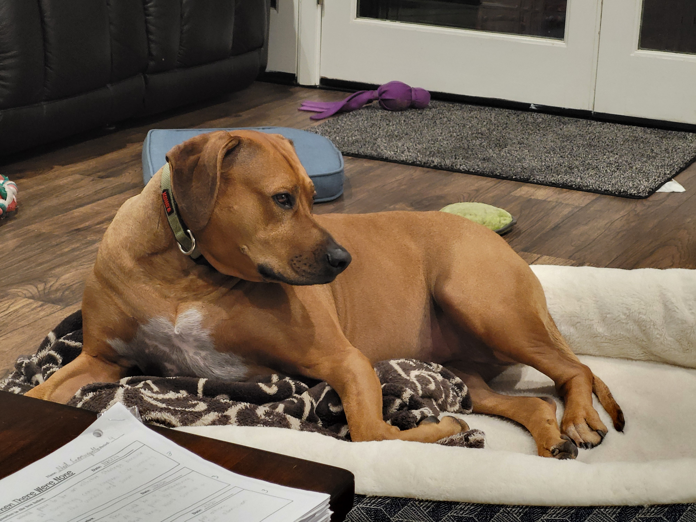

Doggy
Dog Stuff
Sorry I only have pictures of my dog
Big Pictures
Games
My Thoughts
Video games have gained a lot of popularity with technology continuing to advance. Games have have been a way to grow new communities on the internet and meet new people. They have also been able to help releave stress by taking people outside of the real world to forget about their problems for a bit. This is a double edge sword however as people can tend to spend too much time playing video games causing them to get locked in a loop of never exploring the outside world. Game Developers tend to not try and fix this problem as their entire goal for making games is to make it so the player is fully emersed in the virtual world that they have created, further adding to the problem.
More Info
Even with that said, my addiction to video games knows no bounds and I too shall join the game developers that have sucked away hours of peoples' lives into playing a virtual game that holds zero status in the real world.
Something Special
oooo$$$$$$$$$$$$oooo
oo$$$$$$$$$$$$$$$$$$$$$$$$o
oo$$$$$$$$$$$$$$$$$$$$$$$$$$$$$$o o$ $$ o$
o $ oo o$$$$$$$$$$$$$$$$$$$$$$$$$$$$$$$$$$$$o $$ $$ $$o$
oo $ $ "$ o$$$$$$$$$ $$$$$$$$$$$$$ $$$$$$$$$o $$$o$$o$
"$$$$$$o$ o$$$$$$$$$ $$$$$$$$$$$ $$$$$$$$$$o $$$$$$$$
$$$$$$$ $$$$$$$$$$$ $$$$$$$$$$$ $$$$$$$$$$$$$$$$$$$$$$$
$$$$$$$$$$$$$$$$$$$$$$$ $$$$$$$$$$$$$ $$$$$$$$$$$$$$ """$$$
"$$$""""$$$$$$$$$$$$$$$$$$$$$$$$$$$$$$$$$$$$$$$$$$$$$$$$$ "$$$
$$$ o$$$$$$$$$$$$$$$$$$$$$$$$$$$$$$$$$$$$$$$$$$$$$$$$$$ "$$$o
o$$" $$$$$$$$$$$$$$$$$$$$$$$$$$$$$$$$$$$$$$$$$$$$$$$$$$$ $$$o
$$$ $$$$$$$$$$$$$$$$$$$$$$$$$$$$$$$$$$$$$$$$$$$$$" "$$$$$$ooooo$$$$o
o$$$oooo$$$$$ $$$$$$$$$$$$$$$$$$$$$$$$$$$$$$$$$$$$$ o$$$$$$$$$$$$$$$$$
$$$$$$$$"$$$$ $$$$$$$$$$$$$$$$$$$$$$$$$$$$$$$$$$ $$$$""""""""
"""" $$$$ "$$$$$$$$$$$$$$$$$$$$$$$$$$$$" o$$$
"$$$o """$$$$$$$$$$$$$$$$$$"$$" $$$
$$$o "$$""$$$$$$"""" o$$$
$$$$o oo o$$$"
"$$$$o o$$$$$$o"$$$$o o$$$$
"$$$$$oo ""$$$$o$$$$$o o$$$$""
""$$$$$oooo "$$$o$$$$$$$$$"""
""$$$$$$$oo $$$$$$$$$$
""""$$$$$$$$$$$
$$$$$$$$$$$$
$$$$$$$$$$"
"$$$""""
About Me
There is nothing here
There really is nothing to expand to I promise
Why must you keep expanding?
This is all you need
8888888
,d888
,d8P~88
,:d88b;,88P' 88
d8P~''~Y8b~
:8P Y8:
[8| |8]
:8b d8;
Y8b.__,d8P
`~Y88P"^
Why did you open this it was blank?
Shoo, There is no more!
This is a cool section, go here instead
Hi I am Ben, and I want to go into level design for game development in hopes of creating cool and interesting worlds for people to play in. I am a 5th year student here, well tecnically I have only been here 3 years now as I transfered from a Community College up in Sonoma County. Living in the city is a very different pace than I am used too but it has not been as bad as I thought it would turn out.